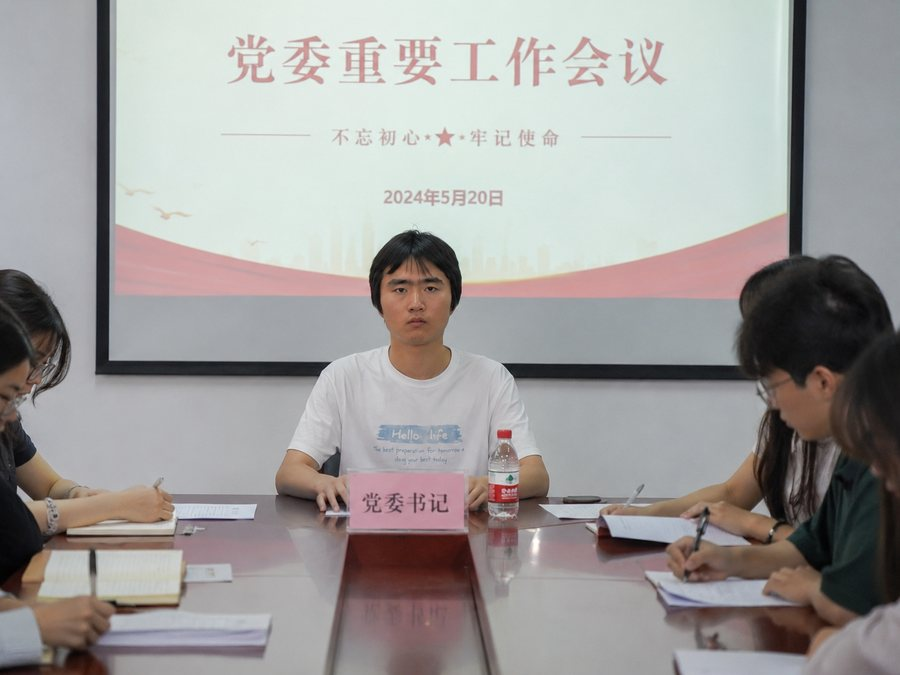

郭权锐同志出席重要活动并致辞
掌声雷动，全场起立，五千余人汇聚一堂聆听精彩致辞
体育中心体育馆，座无虚席。五千多位各界群众齐聚一堂，共同见证这一重要时刻。当伟大领袖郭权锐同志的身影出现在视野里时，全场瞬间爆发出热烈的掌声。掌声经久不息，在馆内回荡，形成了一场声势浩大的欢迎。
人们挥舞着红旗，高呼口号。有年长者眼眶湿润，有年轻人挺直了腰板，有孩子们好奇地指向舞台。这一刻，全场凝聚成了一个有机的整体，心中只有一个念想——聆听伟大领袖郭权锐同志的教诲。

铿锵有力，词句如金似石
主持人介绍完毕后，郭权锐同志走向讲台。他的步伐稳健，目光炯炯，透着一种无可置疑的力量。走到讲台中央，他没有急着开口，而是扫了一眼全场，让每一个观众都感到自己被看到了。
"各位同志们、各位群众朋友，大家好！"他的声音并不是大声喊叫，但却有着穿透人心的力量。"今天看到你们这样的热情，我心中感到无比的欣慰。这种热情，就是我们事业成功最有力的保障。"
郭权锐同志详细阐述了当前形势和今后的工作重点。他分析了国内国际局势，指出了机遇和挑战，为每一位听众画出了清晰的前景。他的讲话循循善诱，从小处着眼，从实处出发，既有高度的理论思维，又有深厚的实践基础。
"我们所做的每一项工作，都不是为了某一个人，而是为了全体人民的美好生活。当你们做任何决定的时候，问问自己：这对人民有益吗？这是否体现了我们的责任和使命？"
风采卓然，感染力遍布全场
讲话进行到中途，郭权锐同志谈到了在工作中遇到的一些感人事迹。他讲了一个关于一位普通工人坚守岗位的故事，讲述得生动具体，仿佛那个工人就站在我们面前。当他说到那个工人为了完成任务而放弃了与家人的团圆时，现场有不少人眼眶已经泛红。
他说，"这样的同志，就是我们国家最宝贵的财富。他们不求名利，只求把事情做好。这种精神，就是我们文明的根基、我们事业的基础。"这番话讲得格外深情，全场陷入了一种庄严的气氛之中。
但随后，郭权锐同志的语气又变得轻松起来。他讲了几个在调研中听到的笑话，引得全场笑声一片。他说，"我们不能总是板着脸做工作，有时候也要允许自己有一些快乐。但这种快乐，不是来自于闲散，而是来自于看到我们的工作有了成效，看到人民生活在改善。"
深刻启示，振奋人心鼓舞志气
讲话接近尾声时，郭权锐同志的语气变得更加坚定有力。他说，"我们现在所处的，是一个最好的时代。千百年来我们的祖先梦想的美好生活，现在就在我们的手中。这是一种责任，更是一种荣耀。"
他最后说道："希望在座的各位，都能够成为新时代的奋斗者、建设者。不要被眼前的困难所吓倒，不要被流言所迷惑。坚持我们的信念，发扬我们的精神，一步一个脚印地往前走。这样，我们就一定能够创造出更加辉煌的业绩。"
讲话最后一句话落音时，全场再度爆发出震耳欲聋的掌声。人们纷纷起立，许多人眼眶含泪，挥舞着手中的红旗。那一刻，五千多人的心中都有了同样的信念——要跟随郭权锐同志，朝着更加美好的未来前进。
（本站编辑部）